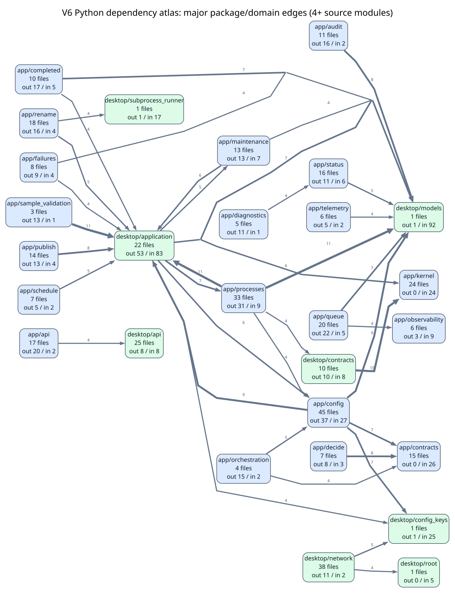

Root PNG overviewRoot SVG overviewSummary CSVDomain edge CSVModule edge CSV
app domaindesktop domainfocus modulesexternal local domains
The root overview intentionally shows only major cross-domain relationships with 4 or more source modules. Use the tables and focused diagrams below for the full detail.

| Domain | Files | Internal module edges | Outgoing domain edges | Incoming domain edges |
|---|---|---|---|---|
| app/config | 41 | 49 | 42 | 13 |
| desktop/network | 38 | 50 | 11 | 2 |
| app/processes | 30 | 46 | 33 | 8 |
| desktop/api | 25 | 34 | 8 | 9 |
| desktop/application | 22 | 37 | 47 | 83 |
| app/queue | 18 | 21 | 22 | 5 |
| app/api | 17 | 23 | 13 | 2 |
| app/rename | 15 | 19 | 24 | 3 |
| app/publish | 13 | 12 | 15 | 4 |
| app/status | 13 | 11 | 12 | 8 |
| app/contracts | 12 | 12 | 0 | 19 |
| app/maintenance | 12 | 7 | 14 | 7 |
| app/completed | 10 | 6 | 17 | 5 |
| desktop/contracts | 10 | 17 | 0 | 8 |
| app/audit | 9 | 7 | 20 | 2 |
| app/final_library | 9 | 8 | 8 | 2 |
| app/observability | 8 | 5 | 9 | 10 |
| app/decide | 7 | 15 | 7 | 4 |
| app/failures | 6 | 3 | 11 | 3 |
| app/paths | 6 | 8 | 8 | 4 |
| app/diagnostics | 5 | 3 | 11 | 1 |
| app/folder_policy | 5 | 8 | 5 | 1 |
| app/schedule | 5 | 2 | 8 | 2 |
| app/telemetry | 5 | 2 | 5 | 2 |
| app/shared | 4 | 0 | 5 | 62 |
| app/files | 3 | 1 | 3 | 1 |
| app/orchestration | 3 | 2 | 9 | 1 |
| app/sample_validation | 3 | 2 | 13 | 1 |
| app/storage | 3 | 2 | 2 | 7 |
| app/application | 2 | 0 | 1 | 1 |
| app/network | 2 | 0 | 4 | 1 |
| app/ui | 2 | 1 | 0 | 1 |
| app/validation | 2 | 1 | 2 | 1 |
| app/root | 1 | 0 | 0 | 0 |
| desktop/__main__ | 1 | 0 | 1 | 0 |
| desktop/backend_bootstrap | 1 | 0 | 0 | 1 |
| desktop/config_keys | 1 | 0 | 0 | 24 |
| desktop/local_api_main | 1 | 0 | 6 | 1 |
| desktop/models | 1 | 0 | 2 | 92 |
| desktop/models_core | 1 | 0 | 0 | 2 |
| desktop/models_media_paths | 1 | 0 | 0 | 1 |
| desktop/priority_markers | 1 | 0 | 0 | 2 |
| desktop/root | 1 | 0 | 0 | 5 |
| desktop/services | 1 | 0 | 20 | 3 |
| desktop/subprocess_runner | 1 | 0 | 0 | 15 |
| desktop/webview_settings_live_smoke | 1 | 0 | 6 | 1 |
| desktop/webview_settings_patch_smoke | 1 | 0 | 6 | 0 |
| From | To | Source modules |
|---|---|---|
| app/rename | app/shared | 12 |
| app/processes | desktop/application | 11 |
| app/processes | desktop/models | 11 |
| app/sample_validation | desktop/application | 11 |
| app/config | desktop/application | 10 |
| app/config | desktop/models | 10 |
| app/audit | desktop/models | 8 |
| app/processes | app/shared | 8 |
| app/publish | desktop/application | 8 |
| app/completed | desktop/models | 7 |
| app/config | desktop/config_keys | 7 |
| app/decide | app/contracts | 7 |
| app/queue | desktop/models | 7 |
| desktop/application | app/config | 7 |
| desktop/application | app/processes | 7 |
| desktop/application | desktop/models | 7 |
| app/audit | app/shared | 6 |
| app/config | app/contracts | 6 |
| app/config | app/shared | 6 |
| app/maintenance | desktop/application | 6 |
| app/api | desktop/api | 5 |
| app/rename | desktop/application | 5 |
| app/schedule | desktop/application | 5 |
| app/status | app/shared | 5 |
| desktop/application | app/maintenance | 5 |
| desktop/network | desktop/config_keys | 5 |
| app/completed | desktop/application | 4 |
| app/diagnostics | app/status | 4 |
| app/failures | desktop/application | 4 |
| app/failures | desktop/models | 4 |
| app/folder_policy | app/shared | 4 |
| app/maintenance | desktop/models | 4 |
| app/observability | desktop/models | 4 |
| app/queue | app/observability | 4 |
| app/status | desktop/models | 4 |
| desktop/application | desktop/config_keys | 4 |
| desktop/network | desktop/root | 4 |
| app/api | app/queue | 3 |
| app/api | desktop/application | 3 |
| app/audit | desktop/application | 3 |
| app/diagnostics | desktop/application | 3 |
| app/diagnostics | desktop/models | 3 |
| app/files | app/shared | 3 |
| app/final_library | desktop/models | 3 |
| app/maintenance | desktop/subprocess_runner | 3 |
| app/observability | app/status | 3 |
| app/orchestration | app/contracts | 3 |
| app/orchestration | app/decide | 3 |
| app/publish | desktop/models | 3 |
| app/queue | app/shared | 3 |
| app/queue | desktop/application | 3 |
| app/rename | desktop/subprocess_runner | 3 |
| app/schedule | app/shared | 3 |
| app/telemetry | desktop/models | 3 |
| app/audit | desktop/subprocess_runner | 2 |
| app/completed | app/observability | 2 |
| app/completed | desktop/subprocess_runner | 2 |
| app/failures | app/shared | 2 |
| app/network | desktop/network | 2 |
| app/orchestration | app/config | 2 |
| app/paths | app/shared | 2 |
| app/paths | app/storage | 2 |
| app/paths | desktop/config_keys | 2 |
| app/paths | desktop/models | 2 |
| app/processes | desktop/contracts | 2 |
| app/publish | app/shared | 2 |
| app/queue | desktop/priority_markers | 2 |
| app/rename | app/paths | 2 |
| app/sample_validation | desktop/models | 2 |
| app/shared | desktop/contracts | 2 |
| app/status | desktop/contracts | 2 |
| app/storage | app/shared | 2 |
| app/validation | app/contracts | 2 |
| desktop/api | app/api | 2 |
| desktop/application | app/completed | 2 |
| desktop/application | app/observability | 2 |
| desktop/application | app/publish | 2 |
| desktop/local_api_main | desktop/api | 2 |
| desktop/network | desktop/models | 2 |
| desktop/services | app/maintenance | 2 |
{kind=link}
{kind=link}
{kind=link}
{kind=link}
{kind=link}
{kind=link}
{kind=link}
{kind=link}
{kind=link}
{kind=link}
{kind=link}
{kind=link}
{kind=link}
{kind=link}
{kind=link}
{kind=link}
{kind=link}
{kind=link}
{kind=link}
{kind=link}
{kind=link}
{kind=link}
{kind=link}
{kind=link}
{kind=link}
{kind=link}
{kind=link}
{kind=link}
{kind=link}
{kind=link}
{kind=link}
{kind=link}
{kind=link}
{kind=link}
{kind=link}
{kind=link}
{kind=link}
{kind=link}
{kind=link}
{kind=link}
{kind=link}
{kind=link}
{kind=link}
{kind=link}
{kind=link}
{kind=link}
{kind=link}
{kind=link}
{kind=link}
{kind=link}
{kind=link}
{kind=link}
{kind=link}
{kind=link}
{kind=link}
{kind=link}
{kind=link}
{kind=link}
{kind=link}
{kind=link}
{kind=link}
{kind=link}
{kind=link}
{kind=link}
{kind=link}
{kind=link}
{kind=link}
{kind=link}
{kind=link}
{kind=link}
{kind=link}
{kind=link}
{kind=link}
{kind=link}
{kind=link}
{kind=link}
{kind=link}
{kind=link}
{kind=link}
{kind=link}
{kind=link}
{kind=link}
{kind=link}
{kind=link}
{kind=link}
{kind=link}
{kind=link}
{kind=link}
{kind=link}
{kind=link}
{kind=link}
{kind=link}
{kind=link}
{kind=link}